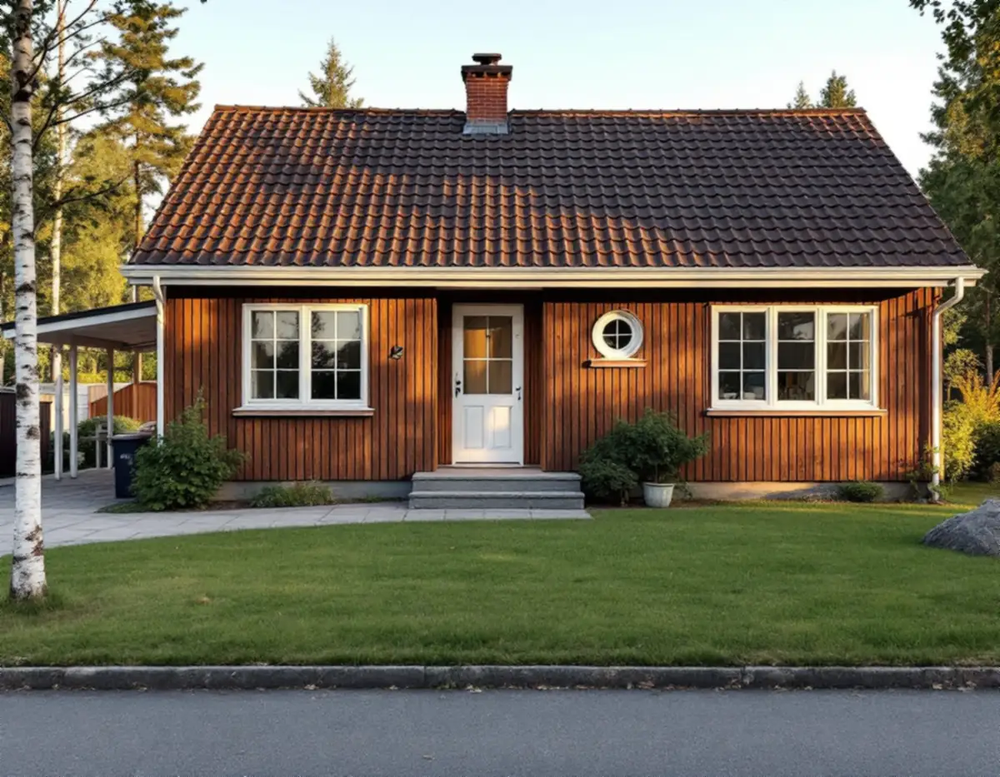
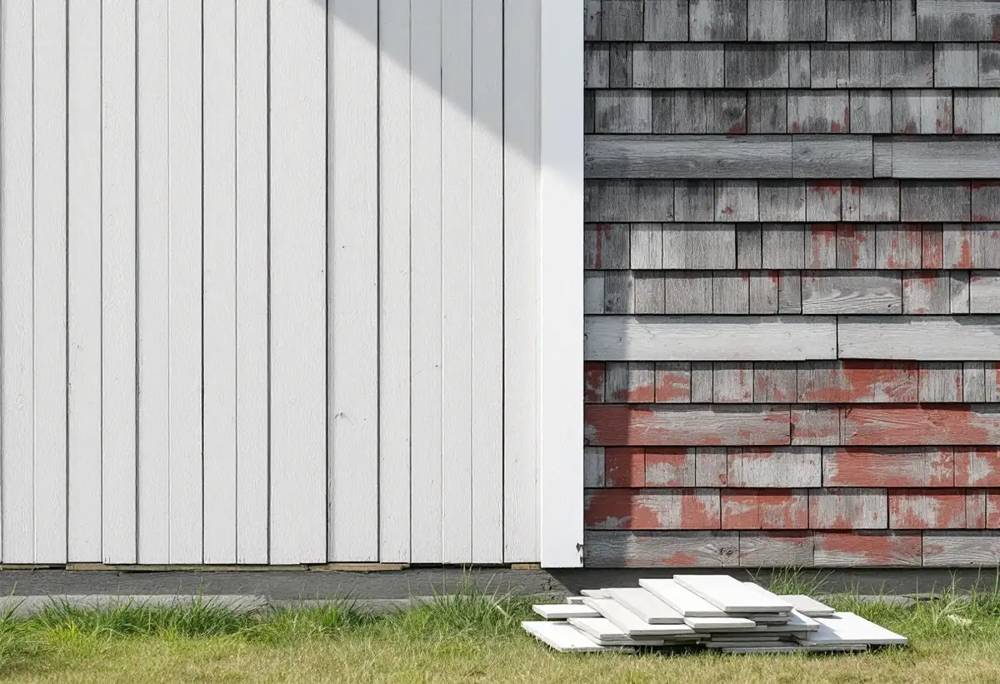

Platsbesök
Vi går runt huset, öppnar panelen på ett undanskymt ställe och ser vad som finns bakom.
På Mälaröarna står villor från förra sekelskiftet sida vid sida med hus från 1960- och 1970-talen. Fasaderna har åldrats på olika sätt och behöver olika slags omsorg. Geal Entreprenad AB renoverar fasader på Ekerö, Stenhamra och på öarna runt omkring, med gratis platsbesök och skriftligt kostnadsförslag.

Ekerö kommuns kulturmiljöprogram från 2015 berättar att Stenhamra på Färingsös sydvästra sida etablerades 1884, när stenbrottet grundades. Stockholms stad köpte granitberget för att säkra tillgången på framför allt gatsten. Intill brottet byggdes Stenhuggarbyn med bostäder för arbetarna och en skola, och några av arbetarlängorna flyttades dit 1889 från stadens gamla stenbrott i Huvudsta. Brottet lades ned 1937.
Under det tidiga 1900-talet började arbetarna bygga egna hem utanför byn. Programmet skriver att de villorna finns kvar men har förändrats och byggts om under årens lopp. I dag domineras Stenhamra av villor från andra halvan av 1900-talet, med många enfamiljshus från 1960- och 1970-talen.
För en fasadrenovering ger det två helt olika utgångslägen i samma tätort: äldre egnahem där flera lager av ombyggnader kan ligga ovanpå varandra, och yngre villor där det ursprungliga utförandet ofta är bättre bevarat men där material och detaljer har nått en ålder då de behöver förnyas.

När ett hus har byggts om i flera omgångar är det inte säkert att den panel som syns i dag är husets första. Ibland sitter en senare beklädnad direkt på en äldre, ibland har panelen bytts helt. Innan vi föreslår lagning eller byte tar vi därför loss en bräda eller en knutbräda på ett ställe där det inte syns och tittar på vad som finns bakom: äldre panel, vindskydd, luftspalt eller ingenting alls.
Det avgör vad som är rimligt. Finns en hel och torr äldre panel under kan den ibland tas fram igen. Är väggen fuktskadad måste orsaken hittas först; Boverket påpekar att mögel eller röta ska åtgärdas innan någon tilläggsisolering påbörjas. Programmets råd för Stenhamra är att villabebyggelsens gestaltning, skala och färgsättning från 1900-talet bör respekteras, och det är en bra måttstock även för det som inte syns från gatan.
Kulturmiljöprogrammet lyfter fram det enhetliga villaområdet längs Ramundvägen som ett av de bästa exemplen på modernistisk arkitektur på Mälaröarna och skriver att det har mycket höga arkitektoniska värden. Programmet föreslår att villorna förses med ytterligare skyddsbestämmelser i detaljplan, och att tillbyggnader i enhetliga villaområden utformas så att områdets karaktär består.
I ett enhetligt område märks avvikelser tydligt. Byter ett hus panelriktning, fönstersättning eller sockelhöjd bryts mönstret längs gatan. Vid en renovering av en villa från den här tiden försöker vi därför behålla indelningen i fasaden och de smala detaljerna kring fönstren, även när själva materialet förnyas.
Är taket på väg att bli lika gammalt som fasaden kan det löna sig att planera båda medan ställningen står. Läs mer under takläggare på Ekerö.
Boverkets energiguide beskriver utvändig tilläggsisolering som ofta bäst för både energi och fukt, men varnar för att fönster och dörrar hamnar längre in i fasaden, att takfoten inte skjuter ut lika mycket och att väggen kan hänga ut över sockeln. Fönster kan behöva flyttas ut, och sockel och takfot byggas på, för att huset ska behålla sina proportioner.
Ekerö kommun skriver att det inte krävs bygglov för fasadändring på ett en- eller tvåbostadshus, utom när fastigheten ligger i ett område som bedömts som särskilt värdefullt. Kommunen påpekar också att en ändring som väsentligt påverkar bärande konstruktion, till exempel nya reglar för ett större fönster, kräver anmälan. Är du osäker kan du mejla ett foto på huset till kommunen och beskriva ändringen, så bedömer de om lov behövs.
Vi går runt huset, öppnar panelen på ett undanskymt ställe och ser vad som finns bakom.
Vi kontrollerar om huset ligger i ett särskilt värdefullt område och om fönsterändringar kräver anmälan.
Du får ett skriftligt förslag där panel, isolering, fönsteranslutningar och bleck står var för sig.
Ställningen anpassas efter tomten och fönster och växter skyddas.
Ny eller lagad panel monteras med luftspalt, och anslutningar mot fönster och sockel görs om.
Fasaden förbereds för målning och vi går igenom arbetet med dig på plats.
Att byta och reparera fasader, tilläggsisolera och montera byggnadsställningar i samband med rotarbete ger rotavdrag i ett småhus. Det gäller även ett fritidshus som du äger och använder.
Avdraget är 30 procent av arbetskostnaden, högst 50 000 kr per person och år och högst 75 000 kr tillsammans med rutavdrag. Material och resor ingår inte. Geal drar avdraget direkt på fakturan.
Vad som finns bakom den panel som syns i dag, hur mycket av väggen som är skadad, om fönster ska flyttas ut vid en tilläggsisolering och om sockel och takfot behöver byggas på. Avståndet till tomten och möjligheten att ställa upp ställning påverkar också. Efter ett gratis platsbesök får du ett skriftligt kostnadsförslag.
Puts, panel och tilläggsisolering.
Fasadrenovering i Stockholm →Takbyte, takbesiktning och plåtarbeten.
Takläggare på Ekerö →Villor i Stenhamra och omgjorda sommarhus.
Golvläggare på Ekerö →Sommarvillor, stugor och villor på Mälaröarna.
Målare på Ekerö →Altan, gäststuga och snickeri nära Mälaren.
Snickare på Ekerö →